특수용접기능사 (2002-10-06 기출문제)
1과목: 용접일반
1. 다음 절단법 중에서 두꺼운 판, 주강의 슬랙덩어리, 암석의 천공 등의 절단에 이용되는 절단법은?
- 산소창절단
- 수중절단
- 분말절단
- 아크절단
(정답률: 50%)

2. 고속분출을 얻는 데 적합하고 보통의 팁에 비하여 산소의 소비량이 같을 때, 절단 속도를 20 ∼ 25% 증가시킬 수 있는 절단 팁은?
- 다이버젼트형 팁
- 직선형 팁
- 산소 - LP용 팁
- 보통형 팁
(정답률: 56%)
3. 아크용접과 비교한 가스용접의 단점은?
- 운반이 불편하다.
- 열량의 조절이 어렵다.
- 설비비가 비싸다.
- 열의 집중성이 나쁘다.
(정답률: 23%)
4. 가스용접을 하기전 병의 무게는 57㎏이었다. 용접후 무게는 54㎏이라면 사용한 용해아세틸렌 가스의 양은 몇 리터인가? ( 단, 15℃,1기압하에서 아세틸렌가스 1kg의 용적은 9⑤리터이다.)
- 약 810
- 약 855
- 약 2715
- 약 3078
(정답률: 86%)
5. 다음 중 순수한 카바이트 1㎏의 이론적 아세틸렌가스 발생량은 몇 리터인가?
- 248
- 284
- 348
- 384
(정답률: 25%)
6. 용접홈을 가공하기 위하여, 슬로 다이버전트(slow divergent)로 깊은 홈을 파내는 가공법은?
- 치핑
- 슬랙절단
- 가스가우징
- 아크에어가우징
(정답률: 48%)
7. 카바이드 통에서 카바이드를 들어낼 때 사용해야 되는 것은?
- 쇠삽
- 쇠주걱
- 모넬메탈
- 단조용 집게
(정답률: 60%)
8. 그림과 같이 점선 A-A'를 따라 가스 절단하였을 때, 나타나는 일반적인 절단강재의 제일 밑부분 형상은 어떻게 되는가?
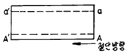
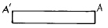
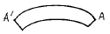
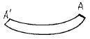
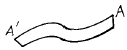
(정답률: 35%)
9. 피복아크용접에서 피복제의 성분에 포함되지 않는 것은?
- 아크안정성분
- 탈산성분
- 피복이탈성분
- 합금성분
(정답률: 64%)
10. 금속아크 용접시 지켜야 할 여러가지 유의 사항 중 적합하지 않은 것은?
- 작업시의 전류는 적정하게 조절하고 정리 정돈을 잘하도록 한다.
- 작업을 시작하기 전에 메인스위치를 켜고 난 후 용접기 스위치를 켠다.
- 작업이 끝나면 메인스위치를 끄고 난 후 용접기 스위치를 꺼야 한다.
- 아크 발생시에는 항상 안전에 신경을 쓰도록 한다.
(정답률: 90%)
11. 아크 용접기에 전격방지기를 설치하는 이유는?
- 작업자를 감전 재해로 부터 보호하기 위하여
- 용접기의 역률을 높이기 위하여
- 용접기의 효율을 높이기 위하여
- 용접기의 연속 사용시 과열을 방지하기 위하여
(정답률: 73%)
12. 아크 용접기에 사용하는 변압기는 어느 것이 가장 적당한가?
- 누설 변압기
- 단권 변압기
- 전압 조정용 변압기
- 계기용 변압기
(정답률: 40%)
13. 플라즈마 아크 절단에서 텅스텐 전극과 수냉노즐과의 사이에서 아크를 발생시켜 절단하는 방법은?
- 이행형 아크 절단법
- 비이행형 아크 절단법
- 가스 가우징법
- 아크 에어가우징법
(정답률: 24%)
14. 일미나이트계 용접봉을 비롯하여 대부분의 피복아크 용접봉을 사용할 때 많이 볼 수 있으며 미세한 용적이 날리는 용착형태는?
- 단락형
- 스프레이형
- 누적형
- 글로뷸러형
(정답률: 58%)
15. 용접결함에 해당되지 않는 용어는?
- 비드 톱 균열(top bead crack)
- 비드 밑 균열(under bead crack)
- 토우 균열(toe crack)
- 설퍼 균열(sulphur crack)
(정답률: 30%)
16. 가스용접에 사용되는 연료가스와 화학기호가 잘못 연결된 것은?
- 아세틸렌 – C2H2
- 프로판 - C3H8
- 메탄 – C4H10
- 수소 - H2
(정답률: 52%)
17. 불활성 가스 텅스텐 아크 용접을 설명한 것 중 잘못된 것은?
- 직류 역극성에서는 청정작용이 있다.
- 알루미늄과 마그네슘의 용접에 적합하다.
- 텅스텐을 소모하지 않아 비용극식이라고 한다.
- 잠호 용접법이라고도 한다.
(정답률: 40%)
18. 다음 그림에서 루트 간격(root opening)을 표시하는 것은?
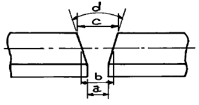
- a
- b
- c
- d
(정답률: 60%)
19. 용접 잔류응력 제거방법이 아닌 것은?
- 케이블 커넥터법
- 저온응력 완화법
- 피닝법
- 기계적 응력 완화법
(정답률: 41%)
20. 해머로서 용접부를 연속적으로 때려 용접 표면상에 소성변형을 주어 용접금속부의 인장응력을 완화하는 방법은?
- 표면법
- 얇은 판에 대한 점 완화법
- 피닝법
- 기계적응력 완화법
(정답률: 52%)
21. 피복 아크 용접기에서 1차 코일을 이동시켜 누설리액턴스 값을 변화시킴으로써 전류조정을 하는 교류용접기는?
- 가동코일형
- 가동철심형
- 탭전환형
- 리액터형
(정답률: 49%)
22. 용접결함의 종류 중 구조상의 결함에 속하지 않는 것은?
- 변형
- 융합불량
- 슬래그섞임
- 기공
(정답률: 60%)
23. 아크에어 가우징은 가스 가우징이나 치핑에 비하여 여러가지 특징이 있다. 그 설명으로 틀린 것은?
- 작업능률이 높다.
- 모재에 악영향이 거의 없다.
- 용접 결함으로 균열이 발생하기 쉽다.
- 소음이 크고 경비가 비싸다.
(정답률: 59%)
24. 용접 작업시 전격방지를 위한 주의사항 중 틀린 것은?
- 캡타이어 케이블의 피복상태, 용접기의 접지상태를 확실하게 점검할 것
- 기름기가 묻었거나 젖은 보호구와 복장은 입지말 것
- 좁은 장소에서의 작업에서는 신체를 노출시키지 말 것
- 개로 전압이 높은 교류 용접기를 사용할 것
(정답률: 68%)
25. 보호가스 공급없이 와이어 자체에서 발생하는 가스에 의해 아크 분위기를 보호하는 용접법으로 용접전원은 교류, 직류 어느 것이나 사용이 가능하며, 직류를 사용하면 비교적 낮은 용접전류로 안정된 아크가 얻어지므로 얇은 판의 용접에 적합한 용접법은?
- 일렉트로 슬래그 용접
- 스터드 용접
- 논가스 아크용접
- 플라즈마 아크용접
(정답률: 50%)
26. 용접균열에 대한 발생원인의 경우가 아닌 것은?
- 과대전류, 과대속도로 용접할 경우
- 예열, 후열을 할 경우
- 유황함량이 많은 강을 용접할 경우
- 나쁜 용접봉을 사용할 경우
(정답률: 59%)
27. 용접기의 보수 및 점검사항 중 잘못 설명한 것은?
- 습기나 먼지가 많은 장소는 용접기 설치를 피한다.
- 용접기 케이스와 2차측 단자의 두쪽 모두 접지를 피한다.
- 가동부분 및 냉각팬을 점검하고 주유를 한다.
- 용접케이블의 파손된 부분은 절연테이프로 감아준다.
(정답률: 34%)
28. 용착금속은 인성이 좋고 기계적 성질이 우수하며 피복제 중 석회석 등의 염기성 탄산염을 주성분으로 하고 여기에 형석(CaF2), 페로실리콘 등을 배합한 용접봉은?
- E4301(일미나이트계)
- E4311(고셀룰로스계)
- E4313(고산화티탄계)
- E4316(저수소계)
(정답률: 40%)
29. 연소의 3요소에 해당되지 않는 것은?
- 소화기
- 열
- 가연물
- 산소 공급원
(정답률: 65%)
30. 다음 중 수소의 성질이 아닌 것은?
- 무색, 무미, 무취이다.
- 확산 속도가 크므로 실내에서 퍼지기 쉽다.
- 산소와 화합되기 쉽고 연소시 2000℃ 이상의 온도가 된다.
- 기체 중에서 폭발범위가 가장 넓다.
(정답률: 36%)
31. 다음 금속 중 가스 용접을 할 때에 일반적으로 용제를 사용하지 않는 것은?
- 연강
- 반경강
- 주철
- 알루미늄
(정답률: 24%)
32. 가스절단에서 양호한 절단면을 얻기 위한 조건은?
- 드래그(drag)가 가능한 한 클 것
- 절단면 표면의 각이 예리하지 않을 것
- 슬래그 이탈이 양호할 것
- 절단면이 평활하며 드래그의 홈이 높고 노치(notch)등이 있을 것
(정답률: 54%)
33. 내용적 40리터, 충전압력이 150kgf/㎝2인 산소용기의 압력이 100kgf/㎝2까지 내려 갔다면 소비한 산소의 량은 몇 리터인가?
- 2000
- 3000
- 4000
- 5000
(정답률: 29%)
34. 용착법중 용접이음의 전길이에 걸쳐서 건너 뛰어서 비드를 놓는 방법으로 변형, 잔류응력이 가장 적게되며 용접선이 긴 경우에 적당한 용착법은?
- 대칭법(symmetry method)
- 교호법(alternate method)
- 후진법(back step method)
- 비석법(skip method)
(정답률: 40%)
35. 주철 용접에 대한 설명 중 가장 옳은 것은?
- 주물은 취성재료이므로 연강에 비해 용접이 다소 곤란하다.
- 수축이 많아 균열이 발생하지 않는다.
- 일산화탄소가 발생하여 용착금속에 기공이 없다.
- 예열온도는 200℃ 이다.
(정답률: 47%)
2과목: 용접재료
36. 탄소강의 적열 메짐의 원인이 되는 원소는?
- S
- CO2
- Si
- Mn
(정답률: 63%)
37. 상온에서도 전성이 있어 압연이나 드로잉 등의 가공이 용이한 7 : 3 황동은?
- Sb 70%,Cu 30%
- Cu 70%,Zn 30%
- Sb 70%,Zn 30%
- Ni 70%,Si 30%
(정답률: 57%)
38. 청동에 탈산제로 미량의 인을 첨가한 합금으로 기계적 성질이 좋고 내식성 내마멸성을 가지며 기어, 베어링, 스프링 등 기계 부품에 많이 사용되는 청동은?
- 인청동
- 알루미늄청동
- 규소청동
- 포금청동
(정답률: 35%)
39. 배빗 메탈(babbit metal)이란?
- Pb를 기지로한 화이트 메탈
- Sn을 기지로한 화이트 메탈
- Sb를 기지로한 화이트 메탈
- Zn을 기지로한 화이트 메탈
(정답률: 19%)
40. 알루미늄에 대한 설명 중 틀린 것은?
- 비중 2.7,융점은 약 660℃이다.
- 전기 및 열의 전도율이 매우 불량하다.
- 바닷물에는 심하게 침식된다.
- 경금속에 속한다.
(정답률: 30%)
41. 비철 금속재료가 아닌 것은?
- 알루미늄
- 구리
- 주철
- 니켈
(정답률: 48%)
42. 오스테나이트계 스테인레스강의 특징을 나타낸 설명 중 틀린 것은?
- 내식성이 우수하다.
- 용접이 쉽다.
- 13 Cr - 0.2 C의 스테인리스강이다.
- 내산성이 우수하다.
(정답률: 34%)
43. 알루미늄에 Cu(3-8%)와 Si(3-8%)를 첨가한 합금은?
- 콘스탄탄
- 알팩스
- 라우탈
- 실루민
(정답률: 30%)
44. 정밀절삭 가공을 필요로 하는 시계나 계기용 기어, 나사 등의 재료로 사용되는 쾌삭황동은?
- 납황동
- 주석황동
- 철황동
- 니켈황동
(정답률: 25%)
45. 담금질이 쉽고, 뜨임메짐이 적으며 열간가공이 용이하고 다듬질 표면이 아름다우며 용접성이 좋고 고온강도가 있어 니켈-크롬강과 더불어 널리 사용되는 구조용 합금강은?
- 니켈강
- 크롬강
- 크롬-망간강
- 크롬-몰리브덴강
(정답률: 20%)
46. 주철에 대한 물리적, 화학적 성질을 설명한 것 중 맞는 것은?
- 규소(Si)와 탄소(C)가 많을수록 비중이 작아지며 용융온도는 낮아진다.
- 투자율을 크게하기 위해서는 유리탄소를 적게 하고 화합탄소를 균일하게 분포시킨다.
- 규소(Si)와 니켈(Ni)의 양을 증가시키면 고유 저항이 낮아진다.
- 주철은 염산, 질산 등의 산에는 강하나 알칼리에는 약하다.
(정답률: 19%)
47. 탄소강 조직에서 과공석강의 조직은?
- 페라이트와 펄라이트의 혼합조직
- 펄라이트
- 펄라이트와 시멘타이트의 혼합조직
- 시멘타이트
(정답률: 21%)
48. 구상 흑연 주철의 접종제로 부적합한 것은?
- 페로 망간(Fe – Mn)
- Fe-Si-Mg
- 세륨(Ce)
- 칼슘(Ca)
(정답률: 18%)
49. 고탄소강의 용접시 단층 용접에서 예열을 하지 않았을 때는 열영향부가 어떻게 되는가?
- 열영향부가 담금질 조직이 되고 경도는 매우 높아진다.
- 열영향부가 풀림 조직이 되고 경도는 낮아진다.
- 열영향부가 뜨임 조직이 되고 경도는 높아진다.
- 열영향부가 불림 조직이 되고 경도는 낮아진다.
(정답률: 20%)
50. 탄소강의 담금질 효과는 냉각액과 밀접한 관계가 있다. 다음 중 냉각 능력이 가장 강한 것은?
- 소금물
- 비눗물
- 수돗물
- 각종유류
(정답률: 24%)
3과목: 기계제도
51. 도면의 중심마크를 설정하는 가장 중요한 이유는?
- 도면의 척도를 쉽게 알게 하기 위하여
- 부품도의 배치에 참고하기 위하여
- 부품의 중심을 쉽게 알게 하기 위하여
- 마이크로필림 촬영, 복사의 편의를 위하여
(정답률: 15%)
52. 다음 선 중 가는 2점 쇄선을 사용하는 것은?
- 중심선
- 지시선
- 가상선
- 피치선
(정답률: 45%)
53. 보기와 같은 3각법에 의한 투상도에 가장 적합한 입체도는?
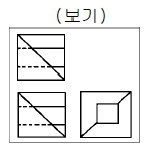
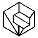
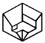
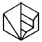
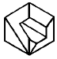
(정답률: 37%)
54. 보기 입체도의 화살표 방향 투상도로 가장 적합한 것은?
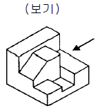
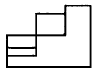
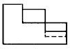
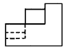
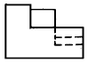
(정답률: 55%)
55. 보기의 용접도시기호를 가장 올바르게 설명한 것은?
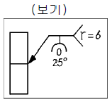
- 홈깊이 6mm, 루트 간격 0mm, 보기홈각도 25° 화살쪽 용접
- 홈각도 25° 루트 반지름 6mm, 루트간격 0mm 화살쪽 용접.
- 루트면 0mm, 루트 반지름 6mm, 용입깊이 25mm 화살쪽 용접.
- 루트면 0mm, 홈 각도 25° 홈깊이 6mm 화살쪽 용접.
(정답률: 40%)
56. 지름이 동일한 원통이 직각으로 교차하는 부분의 상관선을 그린 것이다. 상관선의 모양으로 가장 적합한 것은?
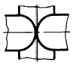
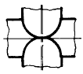
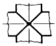
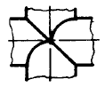
(정답률: 44%)
57. 도면을 접는 경우 겉으로 나오게 하는 부분으로 가장 적합한 것은?
- 부품도가 있는 부분
- 조립도가 있는 부분
- 표제란이 있는 부분
- 도면이 없는 빈공간이 많은 부분
(정답률: 36%)
58. 다음과 같은 투상 방법은?
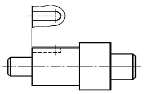
- 회전 투상도
- 보조 투상도
- 국부 투상도
- 부분 투상도
(정답률: 39%)
59. 다음은 치수 보조기호를 나타낸 것으로 참고 치수를 나타내는 기호는?
- Sø
- t
- ( )
- □
(정답률: 71%)
60. 보기와 같은 3각법 정투상도의 정면도와 평면도에 우측면도로 가장 적합한 것은?
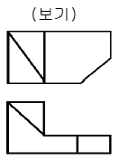
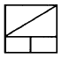
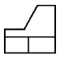
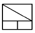
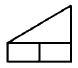
(정답률: 21%)